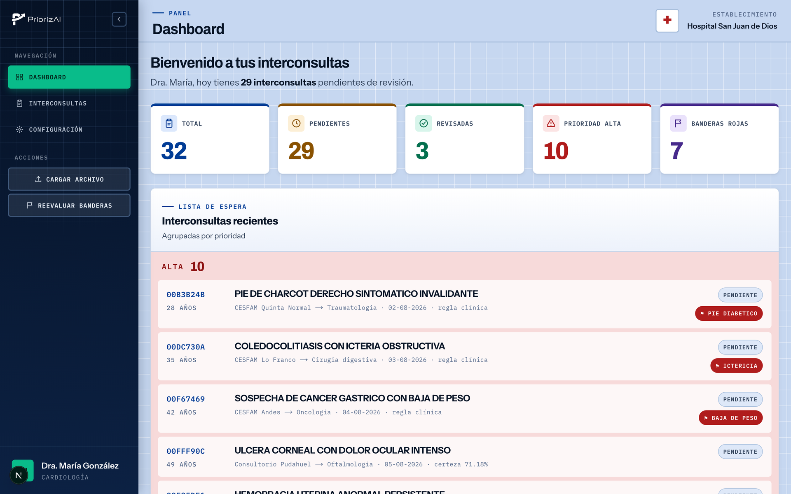
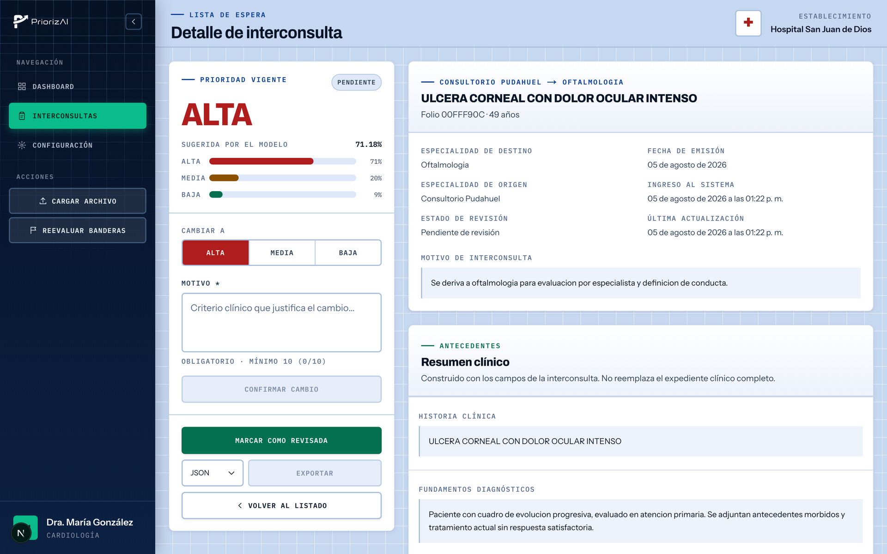

Software de priorización médica · Chile
La lista de espera
no está desordenada.
Está sin priorizar.
PriorizAI lee cada interconsulta con procesamiento de lenguaje natural y propone una prioridad clínica —alta, media o baja— con su nivel de confianza. El especialista decide; el software le devuelve el orden.
Casos sintéticos. En operación ninguna interconsulta sale del hospital.
El proyecto en video
La lista de espera,
agilizada con IA.
La presentación del proyecto, en el canal de PriorizAI. Si prefieres la versión corta antes de leer la página, empieza por aquí.
El cuello de botella
Ocho meses de espera
por una decisión que toma quince minutos.
El problema no es la falta de voluntad clínica: es la aritmética. Chile está por debajo del promedio OCDE en casi todos los recursos que hacen posible atender, y sobre esa base descansa el 86,7 % de la población.
Es lo que espera hoy una persona en lista de espera por una enfermedad no GES.
Chile frente al promedio OCDE
Barra verde = Chile · marca azul = promedio OCDE
médicos especialistas certificados en el país.
de ellos trabaja en el sistema público.
Fuentes: OCDE, Panorama de la salud 2025: Chile · CONACEM, comunicado de prensa del 07-03-2024 · Visor Ciudadano de Tiempos de Espera.
El recorrido de una interconsulta
Del box de atención primaria
a un millón de documentos.
El médico general detecta que el caso excede su alcance.
Se emite la interconsulta y viaja al hospital de referencia.
La interconsulta entra a la bandeja del especialista.
Leer, evaluar y asignar prioridad, uno por uno, a mano.
Más de 1 millón de interconsultas ya se gestionan digitalmente.
Fuente: HL7 Chile, «Más de 1 millón de interconsultas ya se gestionan digitalmente para reducir listas de espera en Chile».

Para hacer valer el recurso más valioso de quienes trabajan por la salud de Chile: su tiempo.— El propósito de PriorizAI
Cómo funciona
Interconsultas ya priorizadas,
más NLP, igual criterio replicable.
El modelo no inventa una regla clínica: aprende de las decisiones que los propios equipos ya tomaron. Ese es el material de entrenamiento y también el estándar contra el que se mide.
Historia clínica, fundamentos diagnósticos, exámenes complementarios y motivo de derivación, con la prioridad que el equipo ya asignó.
RigoBERTa afinado sobre ese corpus y evaluado contra su conjunto de prueba antes de que una sugerencia llegue a una pantalla clínica.
Cada interconsulta recibe una prioridad sugerida —alta, media o baja— con la distribución de confianza detrás de ella. Una capa determinista de banderas rojas puede forzarla a alta.
La herramienta
Dos pantallas.
Ninguna sorpresa.
Un tablero para ver el lote completo y una ficha para revisar el caso. Todo lo que el modelo sugiere queda a la vista, y toda corrección clínica queda registrada con su motivo.

Total, pendientes, revisadas, prioridad alta y banderas rojas. Lo primero que necesita saber quien abre la bandeja en la mañana.
La lista llega en bloques de color: alta, media y baja. Dentro de cada bloque manda la fecha de emisión, así que primero va lo que lleva más tiempo esperando.
Cada fila muestra qué tan segura está la sugerencia. Bajo el umbral definido queda marcada como revisión obligatoria y no puede exportarse sin revisar.
Se alimenta con el archivo CSV o XLSX que ya exporta el sistema hospitalario: no exige reemplazar el registro clínico.

Historia, fundamentos diagnósticos, exámenes y motivo, cada uno con su rótulo y separados de los datos administrativos. Los campos vacíos se indican como tales.
El modelo reparte su confianza entre baja, media y alta: si duda, se nota. Y si un término de alarma aparece afirmado en el texto, una regla determinista fuerza la prioridad a alta y dice cuál lo activó.
Modificar la prioridad exige escribir el criterio que la justifica. Ese motivo queda en el registro de auditoría, junto al usuario y la marca temporal.
La interconsulta revisada sale en el formato acordado con el hospital. Cerrada la sesión, el contenido clínico se elimina de la aplicación.
Ventajas competitivas
Pensado para entrar
a un hospital, no a una nube.
Tres decisiones de diseño que se tomaron antes de escribir la primera línea de código, porque cambiarlas después habría sido imposible.
Diseñado en torno a la seguridad de los datos
Ejecutable de forma local
El texto clínico no queda almacenado
Lo que hay que preguntar
Las dudas razonables,
respondidas sin adorno.
Un priorizador clínico solo sirve si el equipo que lo usa sabe exactamente dónde termina su alcance.
Quiénes lo construyen
Cinco personas detrás
del priorizador.
Un equipo de ingeniería trabajando sobre un problema que se mide en meses de espera.
Piloto
Probémoslo con las
interconsultas de tu servicio.
Buscamos hospitales y servicios de salud dispuestos a evaluar el priorizador sobre sus propios datos, dentro de su red. Cuéntanos el contexto y coordinamos una demo.
PriorizAI es una herramienta de apoyo a la decisión clínica. No emite diagnósticos ni sustituye la evaluación del profesional tratante.